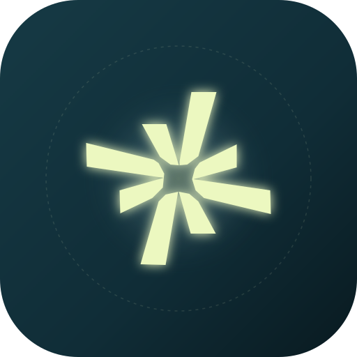

CONSTELLATE
reflect and connect. • RMIT Swanston Library
Take a quiet breath.
Pause for just sixty seconds. Share where you're at today and light up an anonymous star in our collective Swanston Library constellation.
There are no wrong answers here. Take whatever time you need, and share only what feels comfortable.
Emotion, intensity, presence & mind
Text, 30s voice, or skip
Woven into the RMIT's constellation
How are you feeling right now?
Choose whatever feels closest. There are no right or wrong answers.
How strongly are you feeling that right now?
This guides the luminosity and brightness of your star in the space.
How open do you feel to the people around you right now?
This shapes the size of your star and its connection lines in the space.
How busy does your mind feel right now?
This sets the gentle orbit and rotation of your star across the installation.
Leave a thought for the room
Your words attach to your star in the TouchDesigner constellation. Choose text, voice, or skip.
By sharing your reflection, you agree that your anonymous words or voice recording may be softly projected in the library installation. No names, student IDs, or personal identifiers are ever collected or stored.
If someone else in the library was feeling the exact same way, what would you want them to hear?
You can share a thought, a piece of advice, reassurance, or something you wish someone told you today.
Speak your reflection aloud
Tap the microphone to record up to 30 seconds. Your voice note will be softly woven into the library constellation.
Your star is glowing in the library.
Thank you for sharing this quiet moment. Your reflection is now softly woven into the Swanston Library constellation projection.
Support is always here for you
University life can be demanding. If you ever feel overwhelmed or need someone to listen, free and confidential support is available on campus and online:
Kiosk will reset automatically in 20s for the next student.